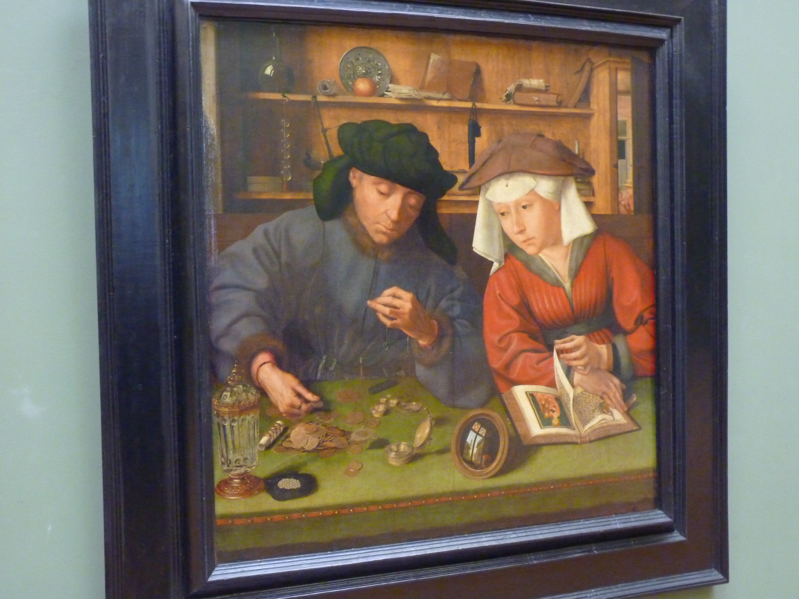
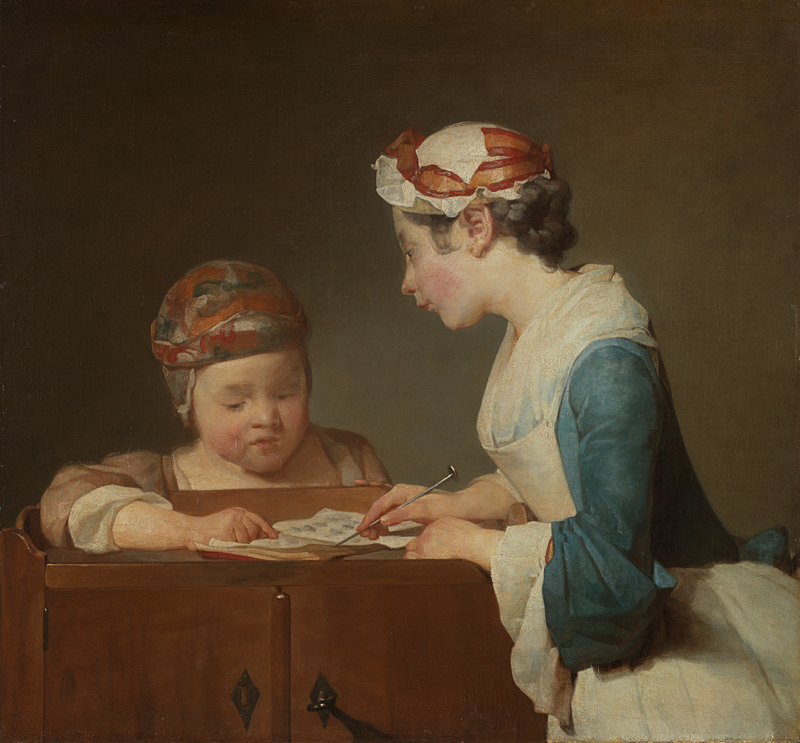

Working Papers
Selected Papers
Organized by theme. Each project asks a simple question and tries to answer it causally.
Economic History & Institutional Change
7

The Moneylender and His Wife
Quentin Massys, 1514. Royal Museums of Fine Arts of Belgium, Brussels.
Massys painted this scene of a couple weighing coins and consulting a book at the dawn of the Northern Renaissance. It is a meditation on the tension between material calculation and spiritual life.
Leapfrogging
How did the Self-Strengthening Movement power modern China's electrification?
Dowry Tax
How did Florence's marriage tax reshape family wealth?
Zodiac Year
How did zodiac years shape pre-modern rural decisions?
Kinship
How did blood ties shape infant mortality before industrialization?
Political Alliances
Why did the Tsar's alliances fail?
Birth Order
How did birth order shape disability in Qing China?
Disability & Elite
How did dynastic China exclude disabled people from the elite?
Health, Genetics & Peer Effects
10

The Sick Child
Gabriel Metsu, c. 1664-1666. Rijksmuseum, Amsterdam.
Metsu captured a mother bending over her ailing child with a tenderness that transcends the Dutch Golden Age.
Lactose Intolerance
What happened when dangerous milk met lactose-tolerant genes?
BMI
How does body weight transmit through peer networks?
Precocious Puberty
Does early maturation spill over to peers?
Gender Peer Effects
Are gender peer effects truly equal?
Genes & Sleep
Do genes amplify the impact of stress on sleep?
Bullying & Patience
Can bullying affect patience through genes?
Bullying & Mental Health
Bullying, genes, and adolescent mental health
Asthma
The long shadow of asthma
Wet-Bulb Temperature
How does wet-bulb temperature affect transport and mood?
Export Slowdown
Is China's export slowdown good or bad for health?
Family, Education & Social Policy
5

The Young Schoolmistress
Jean-Baptiste-Siméon Chardin, c. 1735-1736. National Gallery, London.
Chardin painted this quiet scene of a woman teaching a child to read — the slow and patient transfer of knowledge.
Parental Expectations
How do parental expectations shape special children's academic performance?
Gender Norms
How do gender norms shape parental expectations?
Corporal Punishment
How does corporal punishment shape children's non-cognitive skills?
PES
What can we learn from ecological payment policies?
Talent Classes
Do early talent classes benefit classmates?
Markets, Beliefs & Corporate Behavior
2

The Geographer
Johannes Vermeer, 1669. Städel Museum, Frankfurt.
Vermeer's scholar, surrounded by maps and instruments, bends over his work in a room flooded with light.
Belief Divergence
Uncertainty or disagreement. What drives commodity prices?
Moral Shock
How an accidental court ruling made everyone nervous